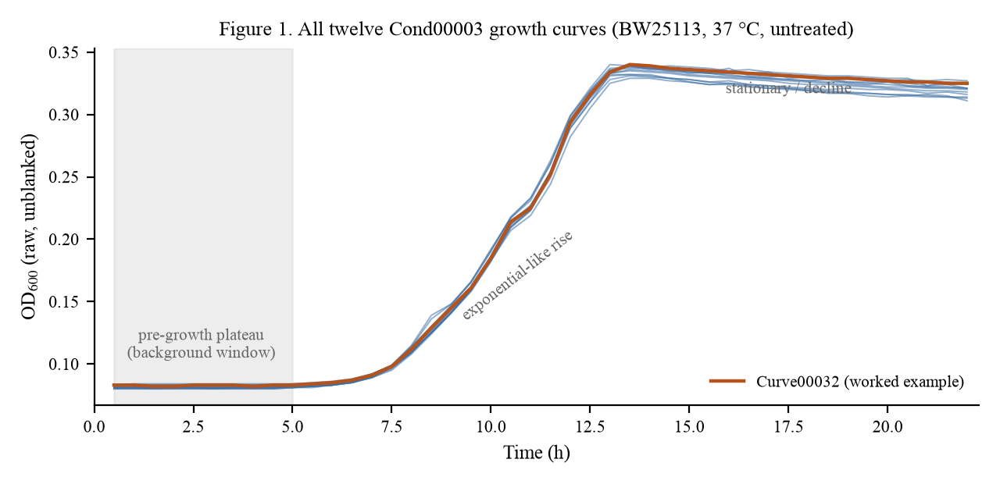
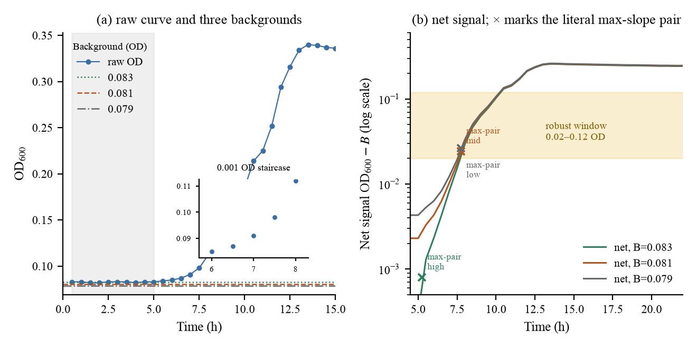
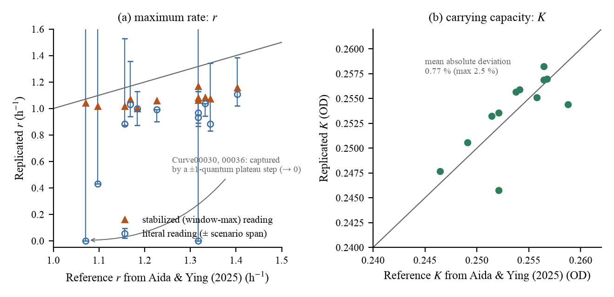
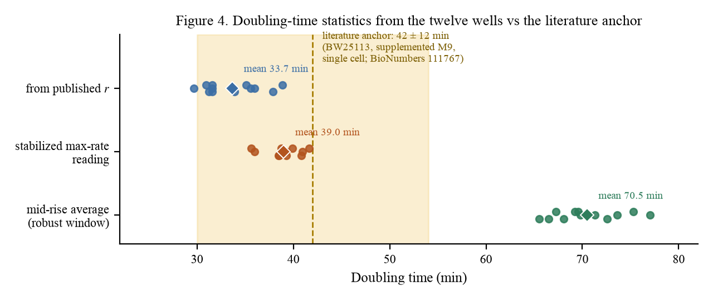

Experiment report prepared inside the Ecolab scientific workspace (repository ecolab-antibiotic-modeling), following the IA report format. All computations and figures are reproducible from the scripts in experiments/bw25113-replication/.
Bacterial growth rates are among the most reused numbers in microbiology. They set the timescale for laboratory experiments, they feed into models of infection and of industrial fermentation, and they are increasingly taken not from new measurements but from published digital datasets. Reusing such data is only as safe as the reproducibility of the quantities extracted from them. A published growth rate usually comes from a processing pipeline applied to optical density (OD) records, and every step of that pipeline — blank correction, choice of the exponential window, treatment of instrument rounding — leaves a fingerprint on the final number.
This investigation therefore performs a replication study on a small, fully documented corner of a large modern dataset. Aida and Ying (2025) released 13,608 OD600 growth curves of E. coli BW25113 across 1,029 chemically defined media, together with their own calculated values of the maximum growth rate r and the carrying capacity K for every curve. The present experiment recomputes r and K for one condition, Cond00003, from the twelve released curves of that condition, using the authors' published formulas but an independently estimated optical background, and compares the outcome with the authors' own numbers. It then converts the resulting rates into doubling times and compares them with a well documented literature value for the same strain.
The research question is stated in full above. In brief: which of the two published parameters survives an independent reanalysis, which does not, and what does the surviving quantity imply about the growth of this strain in this medium?
In balanced exponential growth the population X increases as dX/dt = μX, so the specific growth rate μ (h−1) is the slope of ln X against time, and the doubling time is Td = ln 2/μ. A batch culture passes from a lag phase through exponential growth into stationary phase, so μ is only constant in the middle part of the rising phase; any number called “the growth rate” of a batch curve is therefore a statistic defined by a procedure, not a direct measurement.
OD600 measures light scattering by cells plus the optical background of the medium and the plastic well. The released Cond00003 curves are unblanked: every reading contains a medium background near 0.08 OD (Section 4). A background error δ changes a net signal C into C + δ, and the logarithmic slope between two readings becomes ln((C2+δ)/(C1+δ))/Δt. When C is comparable to δ, the slope is dominated by the choice of δ rather than by growth. The released values are also rounded to three decimals (0.001 OD), so when the net signal is only a few thousandths of an OD unit, one rounding step is a large fraction of the signal.
The source dataset (figshare 28342064, CC BY 4.0; Aida & Ying, 2025) contains raw OD600 records for BW25113 grown at 37 °C in 96 well plates (200 µL, 567 rpm, 1:1000 inoculation from an overnight culture, Epoch2 reader, one reading every 30 min). The condition studied here, Cond00003, is a chemically defined medium built from 44 pure compounds; its carbon source is glucose at only 2 mM (about 0.036 % w/v), with 125.8 mM phosphate buffer, 2 mM ammonium salts and twenty amino acids at 0.01–0.02 mM (Table 2). Twelve wells of this condition (Curve00025–Curve00036) were released as complete curves and are used in this report.
| Group | Components | Concentration |
|---|---|---|
| Carbon source | Glucose | 2 mM |
| Phosphate buffer | K2HPO4, KH2PO4, Na2HPO4 | 61.5 + 22 + 42.3 mM (125.8 mM total) |
| Nitrogen sources | (NH4)2SO4, NH4Cl | 1 + 1 mM |
| Amino acids (20) | Alanine, glycine, serine, … (twenty compounds) | 0.02 mM each; tyrosine 0.01 mM |
| Bulk salts | KCl, NaCl, MgSO4·7H2O, MgCl2·6H2O, CaCl2·2H2O, CaSO4·2H2O, citrate, Na2S2O3·5H2O | 0.005–0.5 mM |
| Trace elements and vitamins | Fe, Cu, Mo, Zn (spelled “ZuSO4” in the source workbook), B; thiamine, pyridoxine, folic acid, riboflavin, aminobenzoic acid | 10−5–0.008 mM |
The authors calculated, for every one of the 13,608 curves, a maximum growth rate r and a carrying capacity K. Their published procedure (Aida & Ying, 2025, Methods; see also Section 3.3) first subtracts the optical background measured in wells loaded with medium only, then computes K as the mean of three consecutive readings after background correction around the curve maximum, and r as the mean of three consecutive logarithmic slopes around the maximum slope of the curve. The calculated values for all curves are deposited in a separate workbook, so the exact reference numbers used in this report come from the same release as the raw curves.
BioNumbers entry 111767 reports a doubling time of 42 ± 12 min for E. coli BW25113 in M9 salts supplemented with 0.2 % glucose and 0.1 % casamino acids, measured by single cell time lapse microscopy in microfluidic chambers (original source: Campos et al., 2014). Two cautions are attached to this anchor. First, the statistical meaning of the ± 12 min is not documented in the entry and is treated here only as an approximate spread. Second, the measurement is single cell and steady state in a richer medium than Cond00003, whereas the present data are batch OD600 in a medium with roughly five times less glucose and no casamino acids. The comparison is therefore expected to be directional rather than exact: a poorer medium should, if anything, grow more slowly.
This investigation is a computational reanalysis of archived data rather than a new laboratory experiment; the variables are defined accordingly in Table 1. The twelve curves are the eight wells that the original release labels as training units (Curve00025–Curve00032) plus the four wells labeled as validation units (Curve00033–Curve00036); the split is used only as an internal consistency check.
| Type | Variable | Specification and method of control |
|---|---|---|
| Independent | Time within each well (0.5–22.0 h, 30 min intervals) | Fixed sampling grid of the plate reader; in this archival reanalysis the biological condition is fixed and time is the only independent axis. |
| Dependent | OD600 reading (raw, rounded to 0.001 OD); derived quantities μj, r, K, doubling time | Read directly from the released workbook; no smoothing or interpolation applied. |
| Controlled (experiment) | Organism; medium; temperature and plate format | All wells: E. coli BW25113 from one stock; medium Cond00003 (44 compounds, Table 2); 37 °C; 96 well plate; 200 µL; 567 rpm; 1:1000 inoculation; Epoch2 reader. |
| Controlled (analysis) | Background scenarios; logarithmic base; fitting window; resampling seed | Three preset backgrounds (Section 3.4); natural logarithm; window 0.02–0.12 OD net signal; seeded bootstrap (fixed seed string). |
All computations were performed with the scientific core of the Ecolab workspace (Node.js 26.4.0). The bundled dataset file was validated and ingested through the project's observation dataset importer, and its SHA-256 was checked against the hash recorded by the project (67b5fc27…f03817) before use. The three figshare workbooks used as reference sources were stored in the experiment folder with their SHA-256 hashes recorded and rechecked by the extraction script. The bootstrap resampling used the project's seeded xoshiro128** generator with a seed derived from the fixed string ecolab-bw25113-replication-v1, so every number in this report is exactly reproducible. Figures were produced with Python 3.14 and Matplotlib 3.11.
With the background B subtracted, the net signal is Ci = ODi − B. The published definitions are, in the authors' notation,
where i is the time of the maximum in the curve, and
where i now marks the maximum consecutive slope. The authors allow any logarithmic base. Comparing both conventions against the deposited r values identifies the natural logarithm as the base they used (Section 4.5). Because Equations 2.1–2.2 select an extreme value of noisy data, this report also evaluates a minimally stabilized reading of the same sentence: the maximum of the averages of three consecutive slopes,
The authors' own blank wells were not deposited with the data, so B must be estimated. The plateau before growth in each well (readings at 0.5–5.0 h, before growth is detectable) sets an upper bound Bhigh; it contains the medium background plus the small contribution of the initial cells. A 1:1000 inoculation from an overnight culture contributes at most about 0.004 OD600, so three scenarios were preset: Bhigh, Bmid = Bhigh − 0.002 and Blow = Bhigh − 0.004. An independent constraint comes from the release itself: 36 wells of other conditions show no growth at all over the full 22 h (Section 4.2), and their readings span 0.0796–0.0832 OD, which brackets the scenario range used here.
Because Equations 2.1–2.2 are sensitive at low net signal, a companion estimate was preset that uses only the middle of the rise, where the signal is far above the rounding step: the ordinary least squares slope of ln C against time over all points with C between 0.02 and 0.12 OD (five points per well, all with C at least twenty rounding steps above zero). This yields an average specific rate through the middle of the rising phase. Uncertainty was characterized by (i) the spread across the twelve wells, (ii) a percentile bootstrap over wells (10,000 resamples, seeded), and (iii) recomputation of all statistics under the three background scenarios.
Figure 1 shows all twelve curves. Every well follows the same sequence: a flat plateau at 0.080–0.084 OD through 5 h, a rise that begins near 5.5–6 h, a peak of 0.329–0.340 OD at 13–13.5 h, and a slow decline to 0.311–0.327 OD by 22 h. The wells agree closely with one another (about ±0.01 OD at the peak), so the condition can be treated as one population of twelve replicates: 528 observations in total.

Figure 2 examines one well (Curve00032) in detail. The original readings are rounded to 0.001 OD, and the plateaus are so flat that the released values form a visible staircase. During the first hours the net signal above the mid scenario background is only 1–3 rounding steps. This matters because a single step change between two consecutive readings corresponds to a pair slope of ln(2)/0.5 h−1 ≈ 1.39 h−1, which is larger than the fastest genuine growth in the rise. The independent background evidence agrees with the scenario range: the 36 wells that show no growth stay between 0.0796 and 0.0832 OD for the full 22 h.

Recomputed K values (mid scenario) agree with the published values almost exactly: the mean signed deviation is +0.00007 OD over the twelve wells, the mean absolute relative deviation is 0.77 %, and the largest single deviation is 2.5 %. The result is stable across the background scenarios (mean absolute relative deviation 0.76 % at Bhigh and 1.26 % at Blow). This is expected from Equation 1: the plateau top is flat, so subtracting a background that is wrong by one or two rounding steps shifts all three readings in the plateau equally and almost cancels in the mean. Values for each well appear in Table 3 and Figure 3(b).
Recomputing r with the literal procedure of Equations 2.1–2.2 (mid scenario) fails to reproduce the published values: the mean absolute relative deviation is 38.6 %, the deviations across wells range from −100 % to −11.8 %, and the correlation with the published values is only 0.41. In two wells (Curve00030 and Curve00036) the maximum pair slope lands on a single step flicker inside the flat plateau, and the mean of the three slopes around that flicker is ≈ 0, so the replicated r collapses to zero. Across the three background scenarios, individual deviations span −100 % to +90 %, and 4 of 12 wells take their maximum from a pair that moves by three rounding steps or fewer (median increment of the peak pair: 10 steps).
The stabilized reading of the same procedure (Equation 3) behaves far better: mean absolute relative deviation 13.8 % (maximum 20.2 %), mean rstab = 1.069 h−1 against a published mean of 1.244 h−1. The residual gap is not random: the published r values fall on a discrete lattice, in which three wells share the value 1.3166… (fifteen significant digits) and four wells share 1.3327…, which is the signature of slopes built from quantized readings and a fixed background; without the authors' original blank wells, the exact lattice cannot be restored, which caps the achievable agreement.

Recomputing r with the base 10 convention shifts every value by a factor ln(10) and raises the mean absolute relative deviation from 38.6 % to 73.4 %. The natural logarithm is therefore the convention behind the deposited values, and all rates in this report are quoted in natural logarithmic units per hour.
Restricting the analysis to the middle of the rise (net signal 0.02–0.12 OD, five points per well) gives tightly linear semilogarithmic fits (R2 = 0.95–0.99 in every well) with a mean specific rate corresponding to a doubling time of 70.5 min (SD across wells 3.6 min; seeded bootstrap 95 % CI 68.6–72.4 min; range over background scenarios 62.9–77.0 min). This is the most defensible single number the curves support: it uses only readings far above the rounding step, and its value hardly moves with the background scenario.
| Well | r lit. (h⁻¹) | r stab. (h⁻¹) | r publ. (h⁻¹) | dev. (%) | K repl. (OD) | K publ. (OD) | Td publ. (min) | Td stab. (min) | Td mid rise (min) |
|---|---|---|---|---|---|---|---|---|---|
| Curve00025 | 0.431 | 1.018 | 1.098 | 7.2 | 0.2551 | 0.2558 | 37.9 | 40.8 | 65.5 |
| Curve00026 | 1.108 | 1.156 | 1.402 | 17.5 | 0.2557 | 0.2538 | 29.7 | 36.0 | 77.0 |
| Curve00027 | 0.884 | 1.073 | 1.344 | 20.2 | 0.2477 | 0.2464 | 30.9 | 38.8 | 69.2 |
| Curve00028 | 1.037 | 1.082 | 1.333 | 18.8 | 0.2569 | 0.2564 | 31.2 | 38.4 | 68.1 |
| Curve00029 | 0.883 | 1.016 | 1.157 | 12.2 | 0.2506 | 0.2491 | 36.0 | 40.9 | 69.8 |
| Curve00030 | 0.000 | 1.042 | 1.071 | 2.7 | 0.2458 | 0.2521 | 38.8 | 39.9 | 67.3 |
| Curve00031 | 0.993 | 1.059 | 1.227 | 13.6 | 0.2536 | 0.2521 | 33.9 | 39.3 | 66.5 |
| Curve00032 | 1.030 | 1.069 | 1.169 | 8.6 | 0.2570 | 0.2568 | 35.6 | 38.9 | 71.3 |
| Curve00033 (v) | 0.999 | 0.999 | 1.184 | 15.6 | 0.2559 | 0.2541 | 35.1 | 41.6 | 69.6 |
| Curve00034 (v) | 0.969 | 1.081 | 1.317 | 17.9 | 0.2582 | 0.2564 | 31.6 | 38.5 | 72.6 |
| Curve00035 (v) | 0.934 | 1.061 | 1.317 | 19.4 | 0.2532 | 0.2514 | 31.6 | 39.2 | 73.6 |
| Curve00036 (v) | 0.000 | 1.167 | 1.317 | 11.4 | 0.2544 | 0.2588 | 31.6 | 35.6 | 75.3 |
Statistics computed on the eight training wells and on the four wells that the release reserves as validation units agree: mean doubling time through the middle of the rise 69.3 min versus 72.8 min, mean K 0.2528 versus 0.2555 OD. The experiment therefore does not depend on which wells were used to develop the pipeline, and no overfitting to a subset can explain the results.
The carrying capacity replicated essentially exactly (0.77 % mean absolute relative deviation) even though the analysis did not have the authors' background wells. This is a real, if modest, replication result: K is a robust statistic because it reads the same plateau top, and it is nearly invariant to background errors of one or two rounding steps. By contrast, the maximum rate r as literally defined did not replicate (38.6 % mean deviation, two collapses to zero). The mechanism is fully visible in the data: with net signals of one to three rounding steps in the early rise, a single step flicker produces a pair slope of up to 1.39 h−1, and Equations 2.1–2.2 select precisely the largest of such noisy slopes. The statistic is an extreme value functional of quantized data that depend on the exact background, so its value is set by rounding and by the subtraction, not by growth alone. The published values themselves show this fingerprint: repeated values to fifteen significant digits across wells (Section 4.4), which independent measurement noise could not produce.
Two clearly defined quantities survive scrutiny. First, there is a transient maximum specific rate of about 1.0–1.2 h−1 in the early rise (around 7–8 h), supported by increments of roughly five to twelve rounding steps rather than by single step flicker; averaging three consecutive slopes dampens what remains of the rounding noise, and this is the quantity the stabilized procedure (Equation 3) estimates (mean 1.069 h−1). Second, the average rate through the middle of the rise is 0.59 h−1 (doubling time 70.5 min); the semilogarithmic plots are linear there, but the local slope declines steadily as the rise proceeds (roughly 1.2 h−1 near 0.02 OD falling to about 0.45 h−1 near 0.1 OD), so the culture never holds a constant exponential rate for long. The two readings are not contradictory: they describe the transient and the phase average of a culture that accelerates briefly and then decelerates, plausibly as the 2 mM glucose supply is consumed.
Converting all statistics to doubling times places them on the scale of the literature anchor of 42 ± 12 min (30–54 min band; Figure 4 and Table 4). The published r implies 33.7 ± 3.0 min (range 29.7–38.8 min); the stabilized transient reading implies 39.0 ± 1.8 min; and the average through the middle of the rise implies 70.5 min with a 95 % CI of 68.6–72.4 min. Both estimates based on the transient sit inside, or at the lower edge of, the anchor band, while the sustained average is clearly slower.
| Statistic | Mean | Spread | Range or 95 % CI |
|---|---|---|---|
| Published r (as deposited) | 33.7 | SD 3.0 | 29.7–38.8 |
| Stabilized transient reading (Equation 3) | 39.0 | SD 1.8 | 35.6–41.6 |
| Average through the middle of the rise | 70.5 | SD 3.6 | CI 68.6–72.4 |
| Literature anchor (supplemented M9, single cell) | 42 | ± 12 (approximate) | 30–54 band |
The comparison must respect the conditions. The anchor was measured single cell in supplemented M9, a richer medium than Cond00003 (about five times less glucose, no casamino acids); a slower sustained rate in the poorer medium is the expected direction, and the 70.5 min average is consistent with it. The transient agreement is more delicate to interpret: it may reflect a genuine early phase in which cells grow near their intrinsic capacity before the small carbon supply constrains them, or it may retain a residue of the same background sensitivity that destabilizes the published r. What can be said without overclaiming is that the doubling time scale of this condition is bracketed by 35–70 min depending on which defensible statistic is used, that the literature value falls inside this bracket, and that neither the published r nor any single alternative statistic can be treated as “the” growth rate of this culture without stating the processing definition. The agreement of the published value with the single cell anchor is therefore better read as consistency of scale than as validation of either number.

For datasets of this kind, the practical lesson is asymmetric: parameters read from the plateau travel well, extreme value slope statistics do not. A reuser of the published K values inherits a robust number; a reuser of r inherits a statistic whose value is tied to the unreleased blank readings and to the rounding at the 0.001 OD level. This is exactly the kind of dependence that replication studies exist to expose, and it required no new measurements to detect — only an explicit treatment of the background and a comparison against the authors' own numbers.
The comparison uses the strongest available reference: the dataset authors' own calculated values for the same wells, so differences cannot come from different data. The data are fully published under CC BY 4.0 with a citable DOI, the analysis is deterministic and seeded, background uncertainty is handled by preset scenarios rather than by a single guess, and the entire pipeline — extraction, computation, figures, report — is contained in the project with recorded hashes. The quantization mechanism behind the unstable statistic was not merely inferred but isolated and quantified.
The most important limitation is that the authors' blank wells were not released, so the exact published r values cannot be regenerated; a stronger version of this study would obtain those blanks (or more precise readings) directly from the authors. The OD600 signal is not a cell count, and the project's dataset documentation explicitly forbids interpreting these curves as CFU data; a CFU calibration for a subset of wells would anchor the optical observation layer. Only one condition of the 1,029 was analysed, and only one plate round, so variability between plates is not characterized; the 0.02–0.12 OD window of the companion estimator is a design choice whose bounds shift the average by about 10 % across scenarios. Finally, the literature anchor itself is single cell in a different medium, and the meaning of its ± 12 min is undocumented; it can support scale comparisons but not exact agreement claims.
The same pipeline applies unchanged to all 13,608 curves and, joined to the released workbook of medium compositions, could map growth rate against glucose concentration across the 1,029 media, turning this replication into a systematic study of how the fragility of r depends on signal amplitude. Repeating the analysis on Rounds 2–7 would test whether the quantization signature is a property of this plate or of the whole release. In the Ecolab workspace, the rate estimated here through the middle of the rise can serve as an independently obtained, clearly defined target for the project's own OD observation model, whose equation OD = baseline + scale × (N/K) contains exactly the background term that this study shows to be decisive.
An independent reanalysis of the twelve released Cond00003 growth curves reproduced the published carrying capacity of E. coli BW25113 to within 0.8 % but failed under a literal reading to reproduce the published maximum growth rate, whose values are set at the 0.001 OD rounding scale and depend on blank readings that were not released. A minimally stabilized reading of the same definition recovers the published rate to within about 14 %, and the resolved middle of the rise gives a doubling time of 70.5 min (95 % CI 68.6–72.4 min). The literature anchor for this strain, 42 ± 12 min in a richer single cell medium, falls between the transient estimates (34–39 min) and the average based estimate, so the data are consistent with it in scale while showing that no single processing statistic deserves to be called the growth rate of this culture without its definition attached.
Aida, H., & Ying, B.-W. (2025). Population Dynamics of Escherichia coli Growing under Chemically Defined Media. Scientific Data. https://doi.org/10.1038/s41597-025-05356-3
Aida, H., & Ying, B.-W. (2025). Bacterial growth profiles across one-thousand chemical-defined media [Dataset, CC BY 4.0]. figshare. https://doi.org/10.6084/m9.figshare.28342064.v1
BioNumbers. (n.d.). Doubling time in M9-supplemented medium, BNID 111767. Harvard Medical School. https://bionumbers.hms.harvard.edu/bionumber.aspx?id=111767
Campos, M., Surovtsev, I. V., Kato, S., Paintdakhi, A., Beltran, B., Ebmeier, S. E., & Jacobs-Wagner, C. (2014). A constant size extension drives bacterial cell size homeostasis. Cell, 159(6), 1433–1446. https://doi.org/10.1016/j.cell.2014.11.022
Keng0nion. (2026). Ecolab: an auditable E. coli–antibiotic modeling workspace [Computer software]. GitHub. https://github.com/Keng0nion/ecolab-antibiotic-modeling